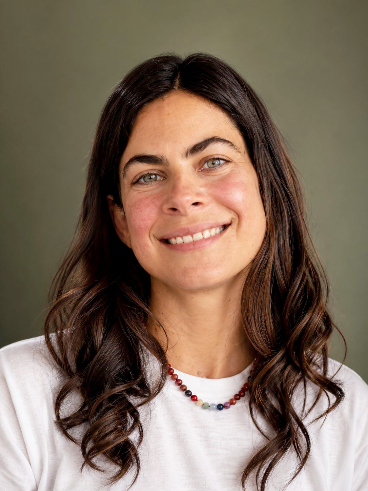

I've always felt spaces. Even as a child, I was acutely aware of how a place made me feel: some I wanted to stay in, others I avoided at all costs. Long before I had the words for it, I was rearranging my bedroom over and over, chasing the calm that came from a room that was clear and uncluttered. Looking back, I think that was my first understanding of how energy moves through a space, and through us.
As I got older, I learned to appreciate a space's beauty: its color, light, pieces of furniture, texture, materials, finishes. But what counted more to me was always how it made me feel, no matter how beautiful it looked on the surface. Over time, I became more aware of how much the places we live in reveal about our lives, and how they can either support a healthy, balanced life or quietly work against it. Creating harmony in a space became more than something I loved doing. It became a way to help people live healthier, more balanced lives.
We spend 90% of our time indoors... ninety percent!! That fact alone still amazes me. It's why bringing wellbeing into the spaces people live in will always be what drives my work as a designer.
Core Essence | Interior Designer, Wellness Hospitality
Aug 2022 – Apr 2023
Strang | Designer, Residential
Jun 2020 – Jul 2020
Edge of Architecture (EOA) | Project Designer, Hospitality
May 2016 – Mar 2020
Master of Interior Architecture, Florida International University
Feng Shui & Space Design Certification, Tisha Morris – July 2020
Continuing education – Master en Interiorismo y Feng Shui (in progress), Carmen Berlanga / Proyecta Feng Shui